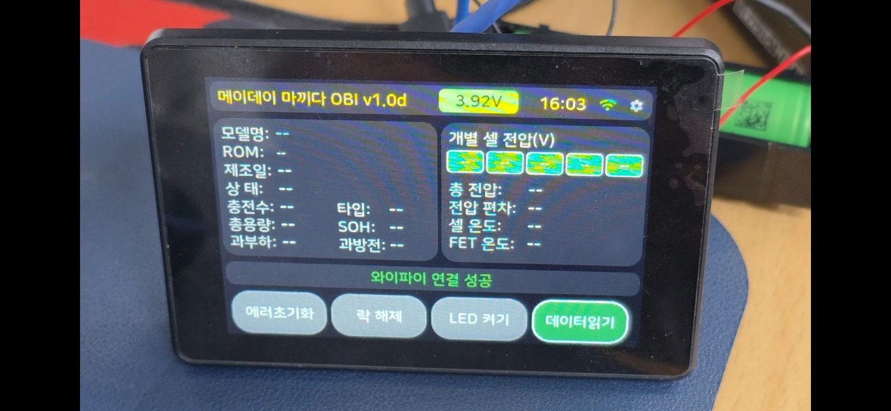
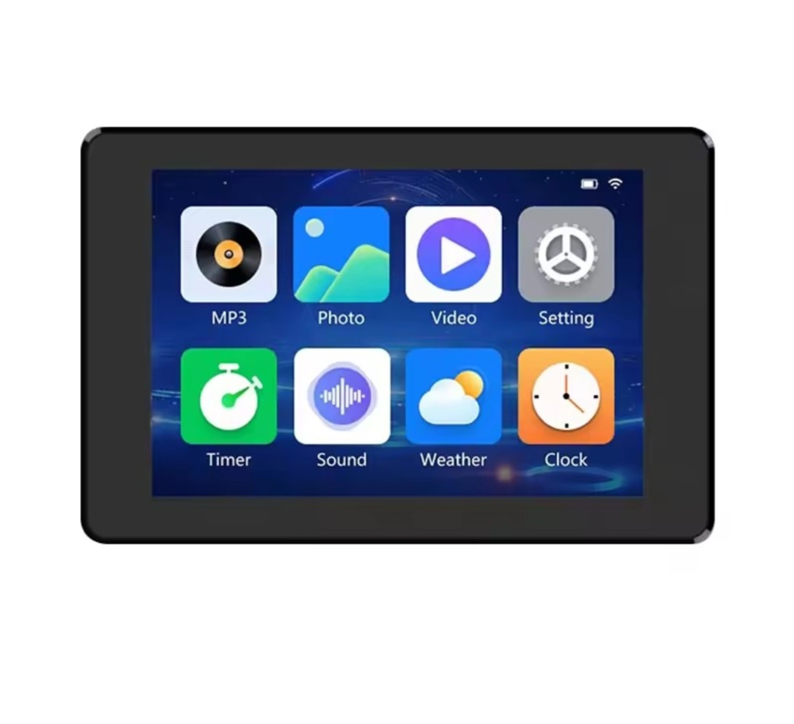
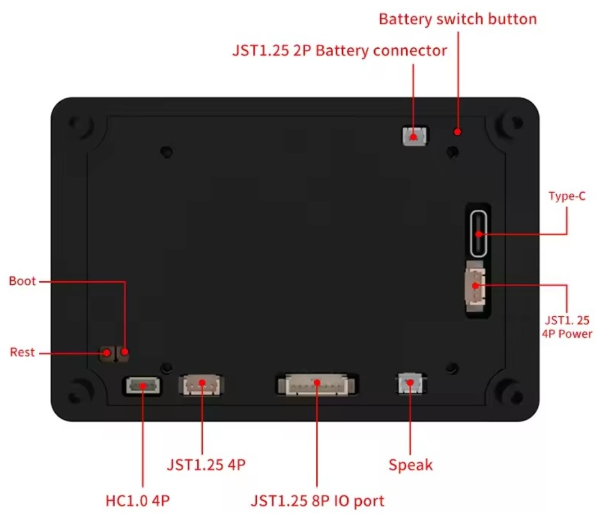

배포 준비 중
MAYDAY OBI
설치 파일과 웹 설치 기능은 아직 공개되지 않았습니다.
ESP32-S3 3.5인치 터치스크린으로 제작한 마끼다 LXT 배터리 진단 프로젝트입니다.

설치 파일과 웹 설치 기능은 아직 공개되지 않았습니다.


P3 P2

배터리 + / −는 P5 전원 단자에 연결합니다. 전압 측정용 두 가닥에는 각각 100kΩ 저항을 넣고, 두 저항이 만나는 지점을 P2의 IO9(7번)에 연결합니다.


IO14는 연결하지 않습니다. 보호회로가 있는 1셀(1S) 배터리를 사용하고 P5의 실제 +/− 극성을 확인하세요.
100kΩ 저항 두 개가 배터리 전압을 절반으로 나눕니다. 배터리가 4.2V일 때 IO9에서는 약 2.1V를 읽고, 제공된 main.cpp는 이 값에 2를 곱해 표시합니다. 마이너스 기준 접지는 P5 −를 통해 연결됩니다.
구매 전 보드 규격과 커넥터 구성이 사진과 같은지 확인하세요.
원본 OBI의 공개 자료 기준입니다. MAYDAY OBI에서 직접 검증한 지원 목록은 아닙니다.
같은 배터리 모델에도 다른 BMS 기판이 들어갈 수 있습니다. 오류 해제가 배터리의 안전을 보장하지는 않습니다.
MAYDAY OBI는 Martin Jansson의 Open Battery Information (OBI)을 바탕으로 제작한 비공식 프로젝트입니다.
원본 OBI: MIT License · Copyright (c) 2024 Martin Jansson. Makita의 공식 제품이나 후원 프로젝트가 아닙니다.